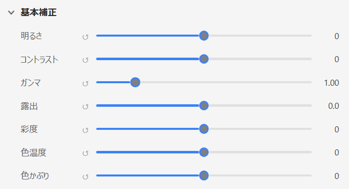
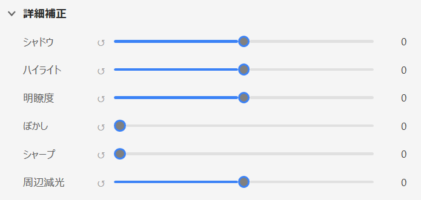
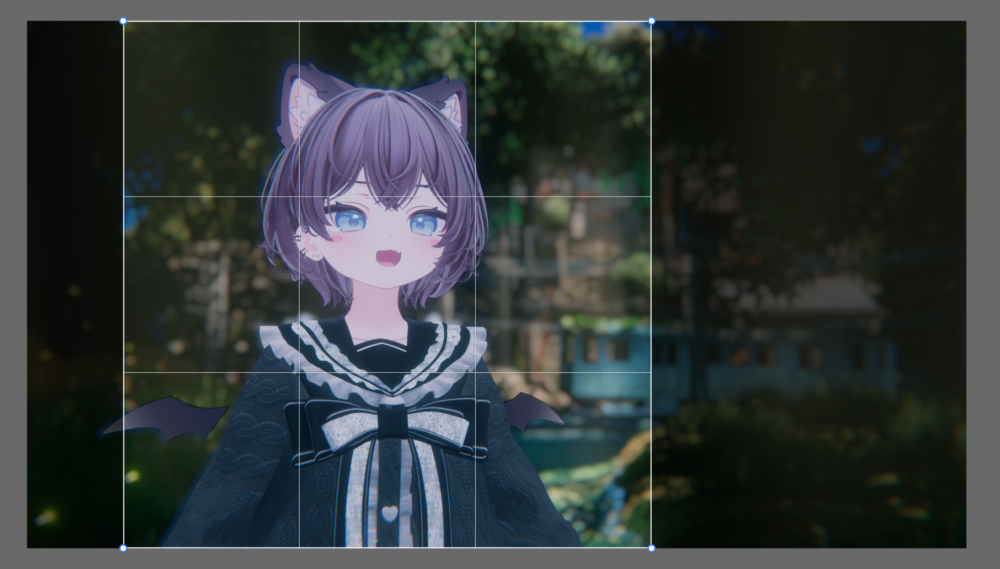
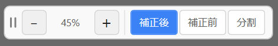
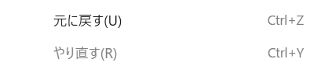
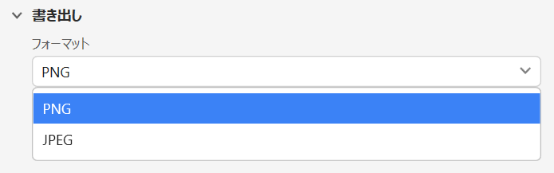

VRCHAT PHOTO RETOUCH TOOL
かんたんに。
VRCosmeでレタッチ
画像を開いて、明るさや色味をちょっと整えるだけ。 補正前後を見比べながら、SNSに投稿する前の写真を仕上げられます。
- Windows 10 / 11
- PNG / JPG / WEBP 入力
- PNG / JPEG 出力
簡単に調整ができる
明るさ、コントラスト、ガンマ、露出まで、よく使う項目をまとめて調整。
見比べながら安心して調整
補正前後をすぐ確認できるので、やりすぎず自然に仕上げられます。
素早くレタッチできる
PNG/JPEG出力に対応。最後の書き出しまで素早く行うことができます。
FEATURES
主な機能
はじめてでも触りやすい、写真仕上げ向けの機能を集めました。

基本補正
明るさ、コントラスト、ガンマ、露出を素早く最適化。

詳細補正
シャドウ、ハイライト、明瞭度、シャープで質感を調整。

トリミング
アスペクト比固定や回転で、構図をテンポよく決定。

比較表示
補正前後・分割表示を切り替えて差分を明確化。

作業支援
Undo/Redo、ルーラー、グリッドで作業精度を安定。

書き出し
PNG/JPEGを選択して保存。JPEGは品質を細かく指定可能。
サポート
お問い合わせはGitHub Issues、またはXのDMからお願いします。ログがあると状況を把握しやすいのでとても助かります。
ヘルプ > ログの書き出し...からログをZIP保存- Issue / DM には再現手順とスクリーンショットを添付
- 可能であればログファイルも一緒に送ってください